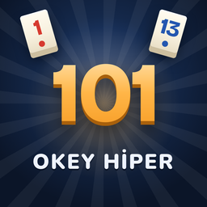

101 Okey Hiper
101 Okey Hiper'de klasik 101 Okey'i gerçek oyunculara karşı oynarsın. Masa 20 saniyede dolmazsa boş koltuklara botlar oturur ve oyun hemen başlar. Kazandığın çiplerle evini döşer, garajına araba alırsın.
Destek
Bir sorun mu var? Bize e-posta gönder: butgetofinans@gmail.com. E-postana oyuncu adını, cihaz modelini ve sorunu kısaca yazarsan daha hızlı yardımcı oluruz.
Sık sorulanlar
"Sunucuya bağlanıyor" yazıp kalıyor.
Oyun internet bağlantısı ister. Wi‑Fi ya da mobil verini kontrol et, uygulamayı kapatıp yeniden aç.
Uygulamayı sildim, çiplerim gitti mi?
Oyun misafir hesabıyla çalışır; hesap bu cihazdaki uygulamaya bağlıdır. Uygulama silinirse o misafir hesaba yeniden ulaşılamaz.
Satın aldığım çipler gelmedi.
Satın alma birkaç saniye içinde hesabına işlenir. Gelmediyse uygulamayı yeniden başlat; olmazsa satın alma tarihini ve Apple makbuzundaki sipariş numarasını bize gönder. İade talepleri Apple üzerinden yapılır: reportaproblem.apple.com.
Çipleri paraya çevirebilir miyim?
Hayır. Çipler sadece oyun içinde kullanılır; gerçek paraya çevrilemez, başka oyunculara aktarılamaz. 101 Okey Hiper gerçek parayla kumar oynatmaz.
Verilerimin silinmesini nasıl isterim?
Ayarlar ekranındaki oyuncu adını ve "veri silme" konusunu yazarak butgetofinans@gmail.com adresine e-posta gönder. Ayrıntılar gizlilik politikasında.
English
101 Okey Hiper lets you play classic 101 Okey against real players. If a table isn't full within 20 seconds, bots take the empty seats so the game starts right away. Spend the chips you win to furnish your home and fill your garage.
Support
Need help? Email us at butgetofinans@gmail.com with your player name, device model and a short description of the problem.
FAQ
- Stuck on "connecting": the game needs an internet connection. Check Wi‑Fi or mobile data and restart the app.
- Deleted the app: the game uses a guest account tied to the app on this device. If the app is deleted, that guest account can't be recovered.
- Purchased chips missing: restart the app. If they still don't appear, send us the purchase date and the order ID from your Apple receipt. Refunds are handled by Apple at reportaproblem.apple.com.
- Cash out: chips have no monetary value and can't be exchanged for money or transferred. The game does not offer real‑money gambling.
- Data deletion: email us with your player name and "data deletion". See the privacy policy.
© 2026 Mustafa Çebişli · butgetofinans@gmail.com